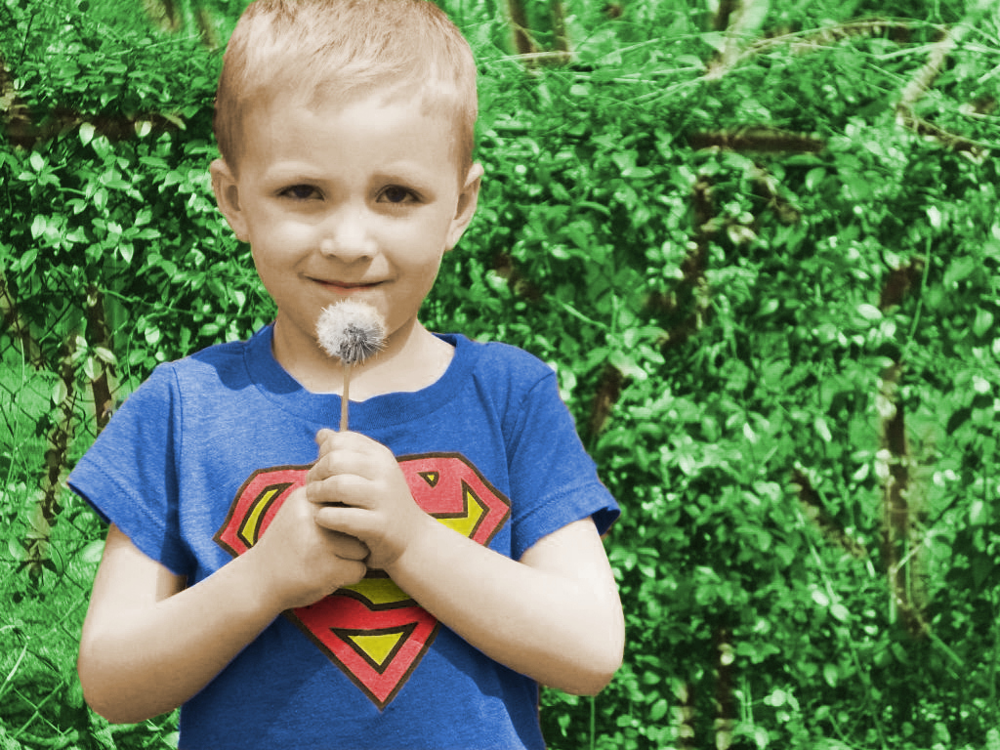
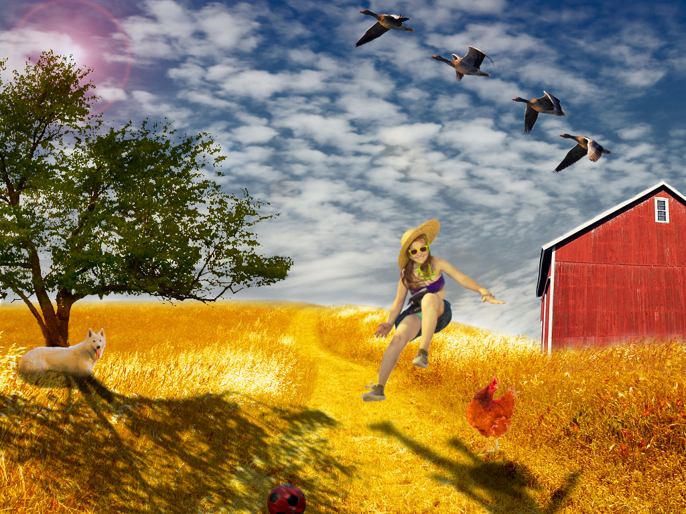
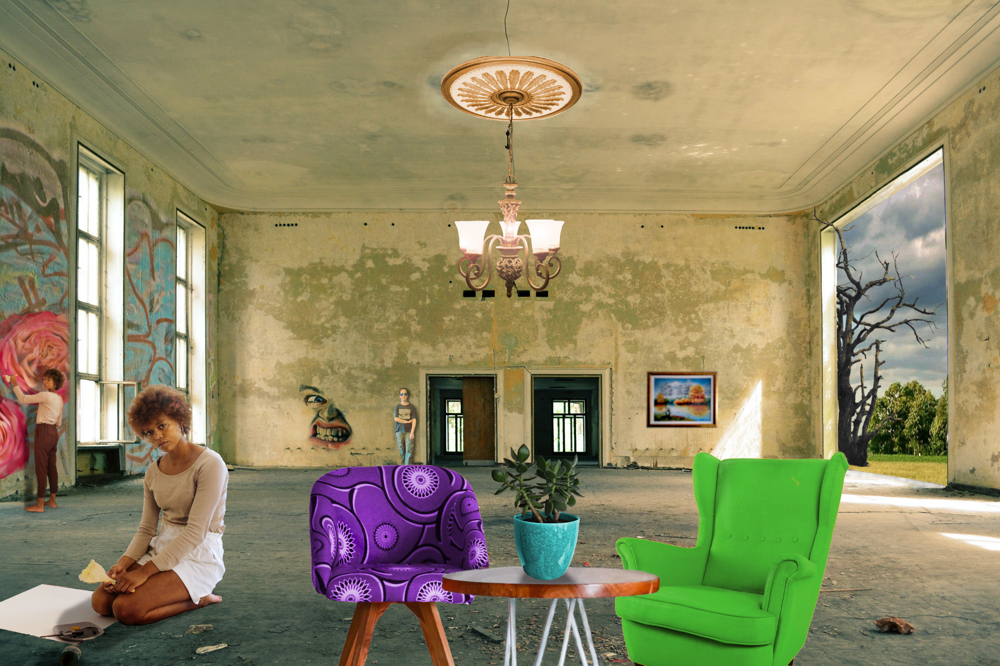

Koristeći se alatom Bezierove krivulje i interpola stvroili smo masku za tekst našeg fonta kojeg smo napravili u prvoj vježbi.

U trećoj vježbi u Inkspace-u smo pomoći Bezierovih krivulja stvarali oblike od kojih smo dobili sliku.


U četvrtoj vježbi unutar Inkspace-a smo crtali predmete na isti način kao i u trećoj vježbi, ali s dodatnim funkcijama poput gradijenata i transparencije.


U projektnom zadatku smo se koristili svim tehnikama koje smo naučili. Ovdje sam s odabranim bojama stvorila pozadinu i dodala gradijent na razen elemente koje smo kopirali i grupirali zajedno radi lakšega snalaženja u layerima.

Pet vježbu sam odrađivala u GIMP-u, u ovoj cjelini smo retuširali fotografije, obradili smo ih tako da smo uklonili štete na fotografijama koristeći se alatom Clone
i Heal
,
dok smo na drugoj fotografiji uklanjali pjegice u ćemu nam je uz ostale alate pomogao i filter Blur
.
Prvoj slici, koja je bila crno-bijela, smo pomoću select alata i koloriranja dodali boje. Istu stvar možemo činiti i sa ne crno-bijelim slikama, što i smo učinili u drugoj fotografiji.

Objedinjenjem mnogih elemenata iz različitih fotografija u jednu stvorili smo fotomontažu. Uglavnom smo se koristili select tool-om, gdje smo za više detalja koristili Toggle mask,a za još složenije elemente smo selektirali putem kanala. Kada smo izdvojili sve elemente potrebno ih je još samo uklopiti u sliku dodavanjem sjena i mijenjanjem HSL-a i temperature boja.
Moj drugi projektni zadatak u GIMP-u. Elemente iz različitih slika smo objedinili u jednu koristeći select alat, koje smo kolorizacijom, burn/dodge alatom i mijenjanjem HSL-a prirodno uklopili u jednu sliku
Koristeći program Shotcut
, izradili smo kinemagraf-video isječak čija se sekvenca ponavlja u beskonačnost, najčešće u GIF formatu. Spaja pokretnu i statičnu grafiku.
U ovoj vježbi sam također koristila program GIMP, kako bi spremljeni frame videa uredili kao masku pomoću koje ćemo stvoriti statičnu sliku i ujediniti je sa pokretnom.


Za ovu vježbu smo trebali kombinirati clipove iz 2 videa, dodati zvuk i video efekte.